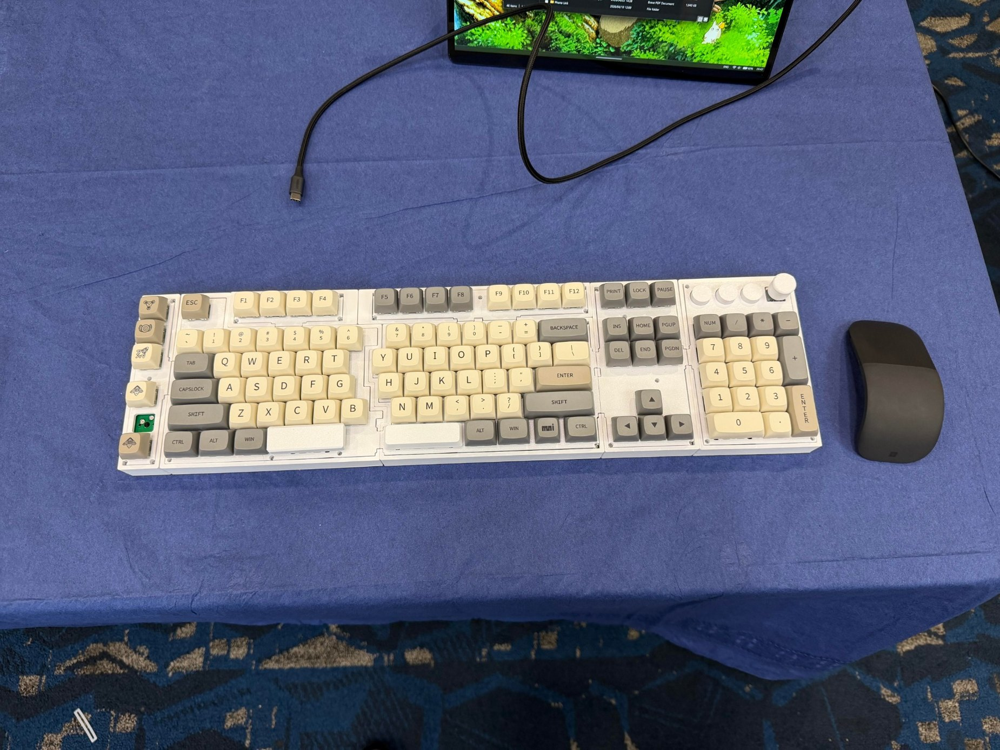
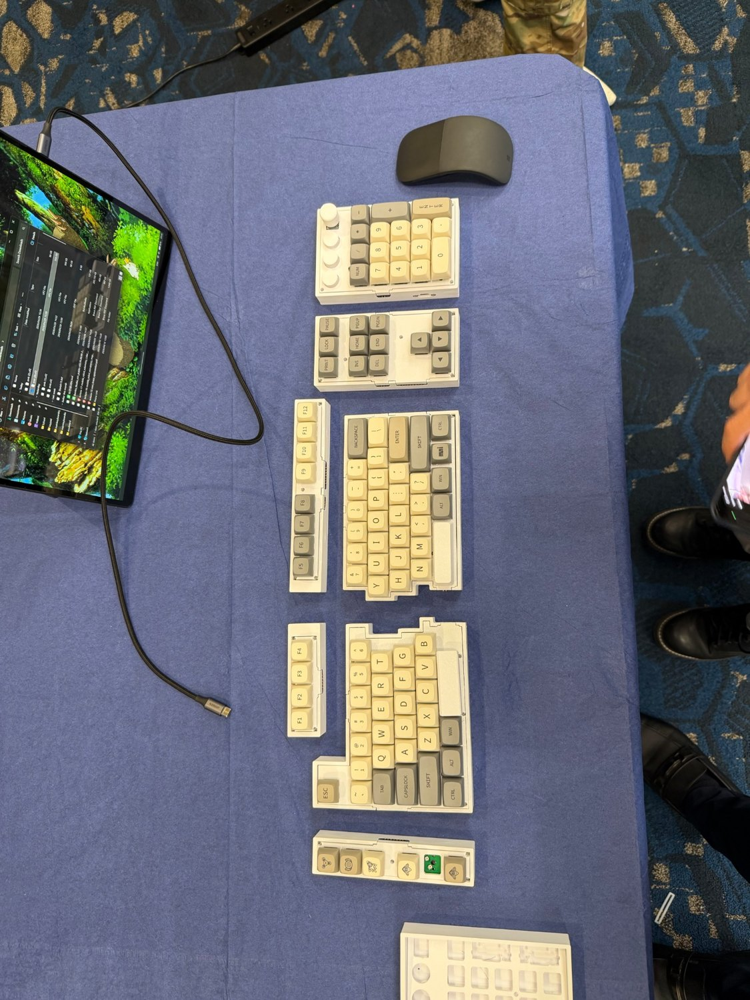

02 / EMBEDDED SYSTEMS
Garden Assistant
Built an ESP32-based display/UI module using an OLED and keypad, developed sunlight-sensor logic, and integrated ESP-NOW communication.
ESP32ESP-NOWOLEDI'm Dylan Matlock — a computer engineering graduate and master's student at Florida Atlantic University. I turn hardware concepts into working systems through PCB design, CAD, fabrication, and hands-on debugging.

From schematic capture to soldering, enclosure fitment, and functional testing.

FIG 01 — MODULAR HARDWARELed hardware development of a fully functioning wireless keyboard with swappable modules and magnetic pogo-pin interfaces. Custom PCBs, 3D-printed enclosures, and hands-on electrical troubleshooting.
Built an ESP32-based display/UI module using an OLED and keypad, developed sunlight-sensor logic, and integrated ESP-NOW communication.
ESP32ESP-NOWOLEDConsole modifications, circuit troubleshooting, soldering, and device repairs — practical experience working directly with electronic assemblies.
SolderingDiagnosticsRepairI enjoy the full product-development process: making design decisions, translating them into schematics and mechanical models, building and testing hardware, and diagnosing the problems that appear once a design becomes physical.
On the modular keyboard project, I originated the concept, led the team, and personally handled PCB design, mechanical CAD, parts selection, assembly, and electrical troubleshooting. My teammates developed the firmware.
Embedded Systems and Engineering Design I. Lab supervision, student hardware/software troubleshooting, grading, office hours, and instructional support.
CNC manufacturing, precision finishing, production quality, and exposure to CAD/CAM workflows using Fusion 360.
Intern: Oct 2021 – Apr 2022 · Employee: Jul 2022 – Aug 2022Interested in hardware engineering, embedded systems, electronics, and R&D opportunities.